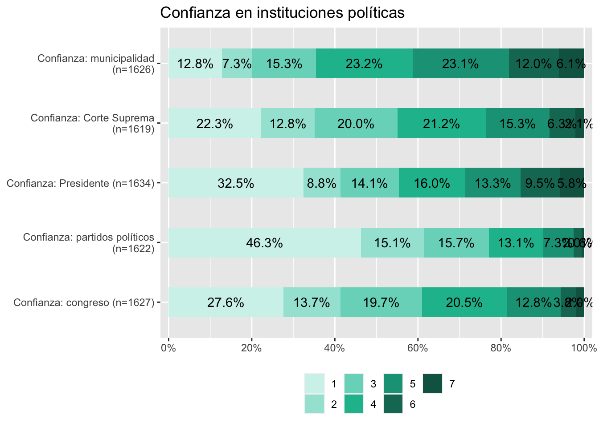
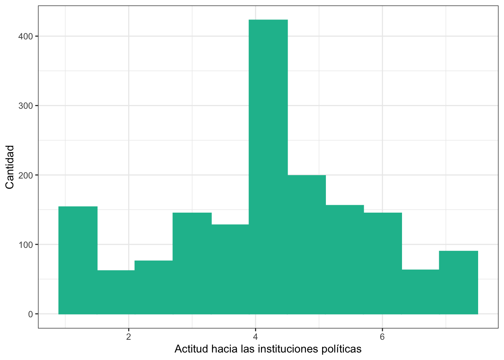

Religión en Chile y la confianza en el sistema político
Introducción
En el marco de los problemas que presenta el sistema político chileno, distintos estudios han explorado factores que influyen en el buen funcionamiento de las instituciones democráticas. En ese contexto, como señalan Ignacio Sepúlveda-Rodríguez and Luis Garrido-Vergara (2022):
Aunque los sistemas democráticos gocen de amplia popularidad en la actualidad, no se encuentran exentos de crisis. Estas crisis se han propagado a partir de la pérdida de legitimidad de los sistemas políticos, en particular debido a la erosión de la confianza entre gobernantes y gobernados. (p. 2)
En relación a lo anterior, la poca confianza en las instituciones políticas surge como un factor decisivo entre las crisis y problemáticas que afectan al sistema político. Como indica Mauricio Morales Quiroga (2020):
una crisis de confianza caracterizada por el desplome de las instituciones, ayuda a entender la crisis de participación y la posterior crisis de representación. En el caso de Chile, el deterioro ha sido muy pronunciado y, en algunos casos, prácticamente definitivo. (p. 20)
Bajo ese clima de desconfianza, se considera que existen distintos elementos influyentes en la magnitud que puede adquirir. Como se explora en el estudio realizado por Fabian Riffo et al. (2019), la zona de residencia de los ciudadanos, la pertenencia a distintos grupos étnicos, el nivel socioeconómico y el grupo etario al que pertenecen son variables que actúan como determinantes en la variabilidad que puedan adquirir los niveles de confianza respecto a las instituciones del país. En ese mismo articulo se destaca la relevancia que adquiere la confianza institucional para la cohesión social, siendo esta entendida como un atributo de la sociedad necesario para su bienestar, en donde se manifiesta un grado de confianza, inclusión y motivación para participar que se relaciona con actitudes, percepciones y normas conjuntas que poseen los actores sociales, viéndose expresada en las interacciones verticales y horizontales de los miembros de la sociedad Annette Schnabel et al. (2014)
Siguiendo con el concepto de cohesión social, desde la sociología se ha estudiado la forma en que la religión se relaciona con la cohesión social. Como señala Annette Schnabel et al. (2014), desde los trabajos de Emile Durkheim sobre religión se desarrolla una propuesta en la que el autor establece que además de ser un hecho social, la religión es una base de construcción de solidaridad social e integración.
Volviendo al tema de las problemáticas del sistema político, estas se pueden vincular con el fenómeno de la religión. Como expresa Evguenia Fediakova (2002), el factor religioso es determinante en la política, pese a que algunas comunidades puedan poseer cierto hermetismo no se ven exentas de incidir en la política y en la cultura. Por otro lado la propuesta investigativa de Ignacio Cáceres (2022) plantea explorar las dimensiones tanto horizontal como vertical de la cohesión social y como impacta la religión en estas dimensiones. De este modo se vincula con la problemática central de esta investigación, ya que como establece Ignacio Cáceres (2022), por un lado en la dimensión horizontal de la cohesión social, se explora la confianza social en la que se espera que la participación en servicios religiosos fomente la confianza en el otro, como consecuencia de desarrollarse en espacios donde el conocimiento y colaboración entre actores son fundamentales. Por otro lado en la dimensión vertical se espera que en forma de su relacionamiento con la política, los grupos religiosos presenten mayores niveles de confianza hacia la política y que posean una actitud cívica mayor en comparación a quienes no pertenecen o se identifican con alguna religión; esto debido a que como la misma investigación expone, “la religión provee a las personas de un marco interpretativo desde el cual posicionarse en la esfera política” (Ignacio Cáceres 2022, 156). De este modo se explicaría una incursión en el mundo político de parte de personas religiosas como consecuencia de unos valores sociales mucho más rígidos y establecidos.
Considerando lo anteriormente expuesto, se propone como objeto central de esta investigación poder observar la confianza hacia el sistema político de parte de quienes profesan o se identifican con alguna corriente religiosa para compararla con los niveles de confianza de quienes no son religiosos. Partiendo de la hipótesis proveniente de la propuesta de investigación de Ignacio Cáceres (2022), en la que se espera que quienes se identifican con alguna religión presenten mayores niveles de confianza en la política en comparación a quienes no lo hacen. De este modo se trabajará con la base de datos de la encuesta LAPOP Barómetro de las Américas, en su medición del año 2023 en Chile.
Análisis descriptivo
A continuación se presentan tablas y gráficos con información descriptiva de las variables seleccionadas para la investigación, estas figuras contienen información univariada.
Tablas descriptivas generales
| var | label | n | NA.prc | mean | sd | range | |
|---|---|---|---|---|---|---|---|
| 2 | conf_congreso | Confianza: congreso | 1627 | 1.5728978 | 2.963737 | 1.6161205 | 6 (1-7) |
| 6 | conf_partpol | Confianza: partidos políticos | 1622 | 1.8753781 | 2.282984 | 1.4792645 | 6 (1-7) |
| 7 | conf_presidente | Confianza: Presidente | 1634 | 1.1494253 | 3.205630 | 1.9558677 | 6 (1-7) |
| 3 | conf_cortsup | Confianza: Corte Suprema | 1619 | 2.0568663 | 3.216183 | 1.6434941 | 6 (1-7) |
| 5 | conf_mun | Confianza: municipalidad | 1626 | 1.6333938 | 3.969865 | 1.6926126 | 6 (1-7) |
| 1 | apoyo_sistpol | Apoyo a las instituciones políticas | 1606 | 2.8433152 | 4.111457 | 1.8146255 | 6 (1-7) |
| 10 | respeto_istpol | Respeto a las instituciones políticas | 1626 | 1.6333938 | 4.330258 | 1.8911374 | 6 (1-7) |
| 9 | religion | religion | 1602 | 3.0852995 | 1.658552 | 0.9115224 | 3 (1-4) |
| 8 | genero | genero | 1643 | 0.6049607 | 1.502130 | 0.5001477 | 1 (1-2) |
| 4 | conf_inst | confianza en instituciones | 1570 | 5.0211736 | 2.365605 | 1.0385012 | 4 (1-5) |
Gráfico “confianza en instituciones políticas”

En base a esta primera tabla y gráfico se puede indicar que en primer lugar sobre las variables de confianza en las distintas instituciones del sistema político, si se considera la escala de estas variables donde 1 significa nada de confianza y 7 mucha confianza, se puede observar en base a los promedios de estas variables que la confianza en las instituciones en general no es alta.
De manera específica se observa que instituciones como los partidos políticos y el congreso son las que presentan niveles de confianza más bajos, con una media de 2,28 y 2,96 respectivamente. Siguiendo con esto tambien se identifica que en este panorama de poca confianza hacia las instituciones, los municipios son quienes se ven mejor evaluados por parte de los ciudadanos, presentando una media de 3,96 lo que puede indicar una confianza menos degradada en comparación al resto de organismos del sistema politico.
Por otro lado respecto al apoyo y respeto al sistema político chileno, en base a las medias de estas variables que presentan valores de 4,11 y 4,33 respectivamente, se puede indicar que presentan valores más altos en comparación a las variables de confianza, pero no son diferencias totalmente distantes. Pese a esto, a modo de interpretación se puede señalar que si bien la confianza hacia las distintas instituciones politicas se ve afectada, esto no ha significado que la ciudadanía no respete el sistema político actual del país, sin embargo esto no niega que pueda existir un descontento con este que se ve expresado fundamentalmente en una baja confianza hacia las instituciones políticas.
Gráfico y tabla sobre religiones
x <categorical>
# total N=1653 valid N=1602 mean=1.66 sd=0.91
Value | N | Raw % | Valid % | Cum. %
------------------------------------------------------
religión cristiana | 899 | 54.39 | 56.12 | 56.12
creyente no religioso | 484 | 29.28 | 30.21 | 86.33
religión no cristiana | 86 | 5.20 | 5.37 | 91.70
no creyente | 133 | 8.05 | 8.30 | 100.00
<NA> | 51 | 3.09 | <NA> | <NA>Observando la anterior tabla y gráfico se puede señalar que hay una presencia considerable de personas que se indetifican con una religión, de esta manera la mayoría se categoriza en una religión cristiana, conformando el56,1% de la muestra (817 casos). Siguiendo con esto quienes son creyentes pero no se identifican con ninguna religión representan la segunda mayoría, con un total de 459 casos representan el 31% del total, de esta manera quienes se identifican con una religión no cristiana y quienes no son creyentes representan una minoría, haciendo en conjunto un total de 201 casos, valor que no supera a ninguna de las categorias anteriores.
Atendiendo a este primer análisis que se centra en la descripción de las variables de manera individual, el siguiente paso constituye un análisis sobre la asociación entre las variables, enfocado en la hipotesis central de esta investigación.
Asociación de variables
En la siguiente tabla permite ver a modo general la asociación de las variables trabajadas mostrando una matriz de correlación, que indica la dirección y fuerza de la asociación
| Confianza: congreso | Confianza: partidos políticos | Confianza: Presidente | Confianza: Corte Suprema | Confianza: municipalidad | Apoyo a las instituciones políticas | Respeto a las instituciones políticas | Religión | Genero | conf_inst | |
| Confianza: congreso | ||||||||||
| Confianza: partidos políticos | 0.580*** | |||||||||
| Confianza: Presidente | 0.345*** | 0.392*** | ||||||||
| Confianza: Corte Suprema | 0.589*** | 0.527*** | 0.521*** | |||||||
| Confianza: municipalidad | 0.409*** | 0.341*** | 0.382*** | 0.476*** | ||||||
| Apoyo a las instituciones políticas | 0.435*** | 0.398*** | 0.437*** | 0.468*** | 0.340*** | |||||
| Respeto a las instituciones políticas | 0.389*** | 0.356*** | 0.296*** | 0.416*** | 0.279*** | 0.448*** | ||||
| Religión | -0.073** | -0.034 | 0.061* | -0.038 | -0.100*** | -0.044 | -0.080** | |||
| Genero | 0.028 | 0.001 | 0.050 | -0.018 | 0.032 | 0.035 | 0.062* | -0.076** | ||
| conf_inst | 0.737*** | 0.708*** | 0.704*** | 0.795*** | 0.665*** | 0.528*** | 0.443*** | -0.039 | 0.022 | |
| Computed correlation used pearson-method with listwise-deletion. | ||||||||||
Con esta primera revisión se puede identificar, bajo los criterios que establece Cohen (1998), que de manera general se presenta una asociación moderada entre las variables. Los coeficientes de correlación de Pearson evidencian una asociación positiva y moderada entre las variables de confianza, respeto y apoyo a las instituciones políticas.
Considerando la información de la tabla, se prosigue con la construcción de dos índices que sinteticen y expresen los niveles de confianza y disposición hacia las instituciones políticas. Basándonos en el enfoque tomado por Ignacio Irarrázaval and Florencia Cruz (2023) sobre la clasificación de variables de confianza, en donde se establece la construcción de índices de tipo promedio simple, de esta manera se procede a desarrollar dos índices que sinteticen y expresen los niveles de confianza y la actitud que se tiene hacia las instituciones políticas (para el índice de actitud hacia las instituciones políticas se trabaja con las variables de apoyo y respeto hacia las instituciones políticas).
Cabe mencionar que este primer análisis no se consideran relevantes los coeficientes que muestran la relación de la variable “religión” con las demás que se han trabajado, esto porque se trata de una variable nominal. Para poder visualizar la asociación de el resto de variables con la religión se opta por una tabla de contingencia que se expone más adelante.
Índice de confianza institucional
Length Class Mode
0 NULL NULL Índice de actitud hacia las instituciones políticas
Min. 1st Qu. Median Mean 3rd Qu. Max. NA's
1.000 3.000 4.500 4.218 5.500 7.000 12 
Tomando en consideración que ambos indices son de promedio, se puede indicar que en general tanto la confianza como la actitud hacia las instituciones políticas es moderada en Chile. Los casos se concentran más en los valores intermedios de los índices, sin embargo se puede indentificar que la confianza institucional se ve más afectada que la actitud que los ciudadanos toman respecto a estas mismas. De este modo se identifica un panorama en el que pese al degradamiento que pueda tener la institucionalidad política del país, los ciudadanos no se posicionan ante él de forma totalmente negativa, el respaldo hacia esta se mantiene.
A continuación se muestra la asociación entre estos índices construidos y la religión de los ciudadanos. Mediante una tabla de contingencia se expresa esta información.
Tablas de contingencia
Confianza institucional según religión
| religion | Confianza institucional |
Total | |||||
| Absoluta confianza | Algo de confianza | Moderada confianza | Mucha confianza | Nada de confianza | Poca confianza | ||
| religión cristiana | 19 73.1 % |
239 54 % |
175 58.9 % |
79 64.2 % |
159 52.6 % |
228 55.5 % |
899 56.1 % |
| creyente no religioso |
2 7.7 % |
140 31.6 % |
83 27.9 % |
28 22.8 % |
93 30.8 % |
138 33.6 % |
484 30.2 % |
| religión no cristiana |
4 15.4 % |
25 5.6 % |
13 4.4 % |
6 4.9 % |
21 7 % |
17 4.1 % |
86 5.4 % |
| no creyente | 1 3.8 % |
39 8.8 % |
26 8.8 % |
10 8.1 % |
29 9.6 % |
28 6.8 % |
133 8.3 % |
| Total | 26 100 % |
443 100 % |
297 100 % |
123 100 % |
302 100 % |
411 100 % |
1602 100 % |
Actitud hacia las instituciones políticas según religión
| religion | Actitud hacia las instituciones políticas |
Total | ||||
| Muy negativa | Muy positiva | Negativa | Neutra | Positiva | ||
| religión cristiana | 81 56.2 % |
180 62.5 % |
70 52.6 % |
351 51.8 % |
210 60.3 % |
892 56.1 % |
| creyente no religioso |
40 27.8 % |
81 28.1 % |
45 33.8 % |
223 32.9 % |
92 26.4 % |
481 30.2 % |
| religión no cristiana |
9 6.2 % |
12 4.2 % |
5 3.8 % |
42 6.2 % |
17 4.9 % |
85 5.3 % |
| no creyente | 14 9.7 % |
15 5.2 % |
13 9.8 % |
62 9.1 % |
29 8.3 % |
133 8.4 % |
| Total | 144 100 % |
288 100 % |
133 100 % |
678 100 % |
348 100 % |
1591 100 % |
A partir de la información expresada en las tablas de contingencia, en primer lugar se puede determinar que sobre la confianza institucional si bien la mayoría de los ciudadanos se sitúan en un nivel bajo e intermedio de confianza, hay diferencias entre los distintos niveles de confianza según la religión del ciudadano pero estas diferencias se pueden atribuír a que por ejemplo en cada uno de los niveles de confianza hay un mayor porcentaje de personas de religión cristiana, lo que puede ser explicado por que esta categoría tiene muchos más casos que las otras. De este modo no se puede determinar con certeza que quienes sean religiosos presenten mayor confianza institucional que quienes no lo son.
Por otro lado en la tabla sobre actitud hacia las instituciones políticas, se puede establecer que predomina un posicionamiento neutro, pero le siguen una actitud positiva y muy positiva hacia las instituciones políticas. En referencia a la diferenciación a partir de la creencia religiosa, se puede establecer que quienes se identifican con una religión tienen una tendencia hacia una actitud más positiva, pero nuevamente una mayor cantidad de casos es lo que eleva el porcentaje y las frecuencias en cada categoría, por tanto no se puede establecer con certeza que haya una diferenciación según la creencia religiosa sobre la actitud que los ciudadanos adoptan hacia las instituciones políticas.
Modelos de regresión lineal
| Modelo 1 | |
|---|---|
| Intercepto | 3.25*** |
| (0.04) | |
| creyente no religioso | -0.23** |
| (0.07) | |
| religión no cristiana | -0.14 |
| (0.15) | |
| no creyente | -0.09 |
| (0.12) | |
| R2 | 0.01 |
| Adj. R2 | 0.00 |
| Num. obs. | 1477 |
| *** p < 0.001; ** p < 0.01; * p < 0.05 | |
| Modelo 2 | |
|---|---|
| Intercepto | 4.32*** |
| (0.05) | |
| creyente no religioso | -0.21* |
| (0.09) | |
| religión no cristiana | -0.27 |
| (0.18) | |
| no creyente | -0.33* |
| (0.15) | |
| R2 | 0.01 |
| Adj. R2 | 0.00 |
| Num. obs. | 1477 |
| *** p < 0.001; ** p < 0.01; * p < 0.05 | |